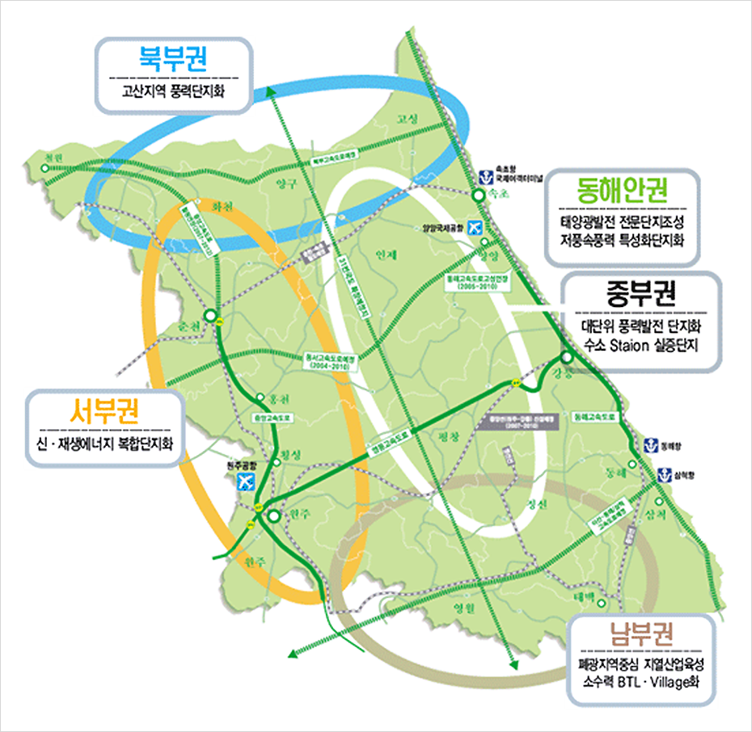
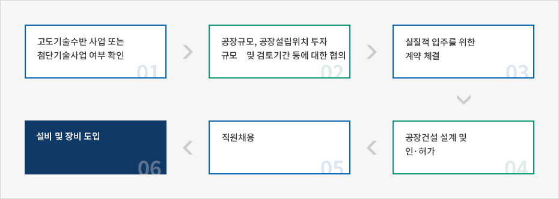

신·재생에너지 산업
- Home
- 주요산업
- 신·재생에너지 산업
대한민국의 에너지현황
대한민국의 경제의 급속한 성장과 에너지수요
- 대한민국은 글로벌 스탠더드에 입각한 기업, 노동, 공공, 금융등 4대 부문의 개혁을 일관되고 강력하게 추진하여 부실과 비효율을 과감하게 청산한 시장질서 중시의 민주국가임
- 매킨지보고서를 비롯한 해외유수의 기관들은 한국경제가 향후 5-6%의 지속적인 성장을 통해 2010년에는 구매력기준 1인당 3만달러의 선진국으로 도약할 것이라는 전망 제시
- 경제성장과정에서 대한민국의 에너지 수요는 지속적으로 증가하는 반면, 높은 수입의존도는 물론 기후변화협약 등 에너지환경의 급격한 변화에 따라 에너지시장의 새로운 돌파구 모색 필요
대한민국의 에너지 목표와 추진전략
- 대한민국은 에너지정책의 새로운 패러다임을 지속가능한 발전속에 추구되는 에너지, 정부주도에서 시장주도형 에너지정책으로의 전환을 큰 방향으로 설정하고 있습니다. 특히 지속가능한 발전을 위해 대체에너지 개발을 위한 예산, 조직, 기술확보등 기반조성을 위해 많은 노력을 기울이고 있습니다.
대한민국의 대체에너지 개발정책
현황
- 대한민국의 대체에너지 비중은 에너지 소비의 1.24%에 불과
- 대체에너지 유형 또한 폐기물 이용열이 93%로 대부분을 차지
대체에너지개발을 위한 정책들
- 대체에너지개발을 위한 실행계획을 범정부차원에서 매년 수립, 추진
- 대체에너지설비 인증제도를 도입, 품질인증을 통한 소비자 신뢰확보
- 대체에너지 성능평가센터 및 실증연구단지 운영을 통해 기술의 내구성, 신뢰성, 표준화 구축
- 대체에너지의 우선 구매 및 차액보전제도 시행
- 대체에너지시설 설치비용에 대한 세제감면, R&D에 대한 자금지원, 관세감면 확대 등 세제와 금융지원 계획 수립
강원도의 대체에너지 개발전략
신ㆍ재생 에너지밸리축에 적합한 강원도의 자연환경
- 강원도가 보유한 전국 최고의 풍력자원을 활용, 풍력발전산업 중심지로 육성
- 기후변화협약에 따라 온실가스배출량 감축 의무 발효
- 선진국의 경우 2008 ~ 2012기간중 90년 배출량 대비 최소 5.8% 감축
- 우리나라는 2013년부터 의무대상 국가에 포함될 것이 확실시 됨에 따라 정부차원에서 대체에너지 확보 대책 추진 → 대체에너지 생산 급증 전망
개발전략
- 5대 구역별 신ㆍ재생 에너지 밸리 조성
- 투자규모 : 2015년까지 6573억원 투입
- 현재 총 에너지 소비량의 2.86%에 그치고 있는 신ㆍ재생 에너지 비율을 10년뒤 10.19%까지 증대시킨다는 전략
- 지열 풍력발전을 2대 신재생에너지사업으로 육성
- 인프라구축 : 강원대ㆍ삼척대의 R/D센터 설립 및 지열 기술자 양성 등
- 지열산업 육성 : 지열의 핵심부품인 공장 유치 등
주요 권역별 개발계획


북부권 - 고산지역 풍력단지화, 동해안권 - 태양광발전 전문단지조성 저풍속풍력 특성화단지화,
중부권 - 대단위 풍력발전 단지화 수소 staion 실증단지, 서부권 - 신ㆍ재생 에너지 복합단지화,
남부권 - 폐광지역중심 지열산업육성 소수력 BTLㆍVillage화

동해안 l 서부권
개발컨셉
- 동해안권 - 동해안 태양광 발전단지화, 저속풍력발전 연구단지 조성
- 서부권 - 지열등 신·재생에너지 복합단지화
추진전략
- 사회복지시설의 화석에너지 ZERO화(태양광/열, 지열등 신·재생에너지 100%공급)프로그램 마련 추진
- 대한민국 최고의 관광레저 지역인 동해안을 태양광발전 전문단지로 관광산업과 연계추진
- 지열을 풍력에 이은 제2의 강원도 신·재생에너지산업으로 육성
(R&D센터설립,지열기술자 양성, 지열 핵심부품업체 유치, 세계지열히트펌프협회 한국지회설립추진등)
중부 l 북부권
개발컨셉
- 중부권 - 풍력발전 클러스터 및 설비산업화 추진
- 북부권 - 접경 고산지역 풍력발전단지화(비무장지대 평화적 이용)
추진전략
- 풍력발전 클러스터 조성 : 풍력발전단지-풍력산업화
- 풍력자원 조사 및 Wind Map작성으로 민자,외자 유치 인프라 구축
- 실증연구단지내 인증센터를 설립하여 국제적인 인증기관으로 육성
중부권
개발컨셉
수소 스테이션 중심의 파워파크 조성추진전략
미래 핵심 에너지인 수소에너지 개발을 위해 인프라 구축을 위한 R&D 시설인 수소스테이션의 부지를 무상으로 제공하는 등 전략모색남부권
개발컨셉
풍부한 산림 및 수자원을 이용한 바이오매스 및 소수력 보급추진전략
- 소수력 : 자연낙차 이용시 소규모 BTL(개발-소유권 이전-리스)방식으로 개발
- 소수력 : 기존 시설물 이용시 경제성 확보시설 우선개발
- 바이오매스 : 바이오매스 발전소에서 발생한 온수는 지역난방에 활용,
- 바이오매스 : 생산된 전력은 해당마을 사용 및 잉여전력 판매
Supports & Incentives
주요 투자 프로젝트
- 풍력발전
- 풍력자원현황 및 사업추진계획
| 지역명 | 조사기간 | 조사결과 | 추진상황 | |
|---|---|---|---|---|
| 평균풍속 (m/sec) |
에너지밀도 (w/㎡) |
|||
| 대관령 전망대 | ’00. 9 ~ ’01.11 | 9.7 | 1,212 | 강원풍력발전 2.0MW 49기 |
| 횡성군 태기산 | ‘00. 9 ~ ’01.11 | 6.3 | 397 | |
| 태백시 함백산 | ‘00. 9 ~ ’01.11 | 7.7 | 465 | GE＋Posco 1.5MW30기 |
| “ 매봉 | ‘01. 3 ~ ’02. 7 | 8.4 | 746 | 태백시 0.85MW 8기 |
| “ 피재 | ‘01. 3 ~ ’02. 7 | 5.4 | 250 | |
| “ 귀네미 | ‘03.11 ~ ’04. 3 | 9.4 | 남부발전 (2.0MW 10기) | |
| 평창군 육백마지기 | ‘04. 8 ~ ’05. 9 | 6.2 | 남부발전 (2.0MW 10기) | |
| 양구군 돌산령 | ‘03.11 ~ ’04. 3 | 9.5 | 중부발전 (2.0MW 10기) | |
지열산업단지 조성
- 대체에너지개발 및 이용보급촉진법에 의거 대체에너지 이용 의무부과
※ 대체에너지 이용 의무부과: 정부출자기관, 3,000㎡ 이상 신축 건축물에 대해 총공사비의 5%이상 대체에너지 설비에 이용 - 태양광에너지와 지열에너지를 활용한 냉난방 수요 급증예상
- 태양광은 옥상 설치에 따라 미관상 제약
- 미관에 영향이 없는 지열에너지 이용이 더 많을 것으로 전망
- 지열에너지 활용을 위해 필수적인 Hit Pump 생산이 필요하나 한국의 경우 수입에 의존
- 앞으로 수요증가에 대비 국내에서 직접 생산 판매하는 것이 유리
- 지열 관련 산업은 강원도의 환경여건과 부합되어 적극적인 지원계획 수립
조세분야(고도기술수반업종의 경우)
- 국세 : 법인세, 소득세 5년간 100%, 그 후 2년간 50% 감면
- 지방세 : 취득세, 등록세 – 전액면제 / 종합토지세, 재산세 - 15년간 전액 면제
- 관세, 특소세, 부가세 : 투자신고 후 3년 이내에 도입되는 자본재 100% 면제
- 1백만 불 이상의 고도기술수반업종에 대한 투자일 경우 입지에 대한 임대료와 세금을 감면 받을 수 있음
보조금 지원
고용보조금 지원
- 지원대상 : 당해 기업(제조업)에 대한 외국인 투자비율이 30%이상이거나 외국인이 제1대 주주이어야 함.
- 지원기준 : 내국인 신규채용이 10명을 초과시 신규채용인원
- 지원금액 : 1인당 월 50만원 고용보조금을 지원(3년 범위)
교육훈련 보조금 지원
- 지원대상 : 당해 기업(제조업)에 대한 외국인 투자비율이 30%이상이거나 외국인이 제1대 주주이어야 함.
- 지원기준 : 내국인 신규채용이 10명을 초과시 신규채용인원
- 지원금액 : 6개월 범위 안에서 1인당 50만원이내 보조

- 고도기술수반 사업 또는 첨단기술사업 여부 확인
- 공장규모, 공장설립위치 투자 규모 및 검토기간 등에 대한 협의
- 실질적 입주를 위한 계약 체결
- 공장건설 설계 및 인·허가
- 직원채용
- 설비 및 장비 도입